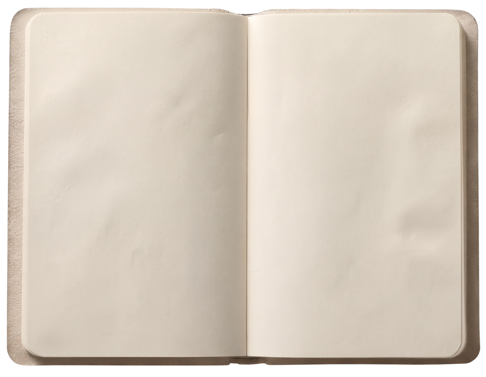

Destapo mi cabeza como una jarra de galletas. Es mi lugar secreto donde guardo mis sueños. Pequeñas bolas de luz solar, frotándose como varios gatitos. Alcanzó uno adentro y lo saco con mi pulgar y dedo índice. Es cálido y da cosquillas. ¡Pero no hay tiempo que perder! Lo pongo en una botella que lo va a proteger. Y pongo la botella en la repisa donde están las demás. Pensamiento feliz, pensamiento feliz, pensamiento feliz en botellas, todas en fila. Mi colección me consigue amigos. Cada botella una estrella de hacer remiendos. A veces mi amigo se siente de alguna manera. Y a salvar el día van mis botellas. Noche tras noche, más sueños. Amigo tras amigo, más botellas. Más profundo y profundo mis dedos van. Como explorando una cueva, descubriendo secretos ocultos en grietas.
Cavando y cavando. Rascando y rascando. Quito el polvo encima de mis botellas. El tiempo ya no parece pasar. Mi repisa vacía necesita aún más. Mis amigos a través de mi puerta cerrada miran detrás. Finalmente, todo bien. Abro y mis amigos entran. Ellos entran apresurados. ¿De verdad tanto quieren mis botellas? Yo frenéticamente las bajo de la repisa, una tras otra. Pasándolas a cada uno de mis amigos. Cada una de las botellas. Pero cuando dejo ir una, se rompe contra el suelo enfrente de mi. Pensamiento feliz, pensamiento feliz, pensamiento feliz en trozos por todo el suelo. Se suponía que eran para mis amigos, los cuales no están sonriendo. Están todos gritando, rogando. Algo. Pero solo escucho eco, eco, eco, eco, eco En mi cabeza.